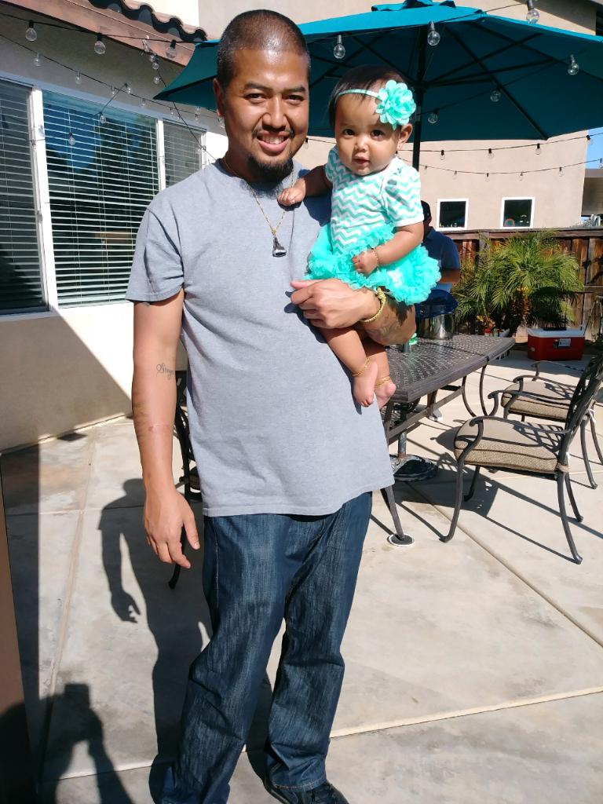

About Me
My name is Andrew Singo. I am a proud father of four with a new born on the way. I have decided that it is time to make a career switch for a better quality of life. I currently am a full time Commerical Fuel Driver & owner of The Sticky Rice Spot where we cater Lao & Khmer food. With the demand of the industry it is hard to have quality time with family. Taking care of my family is my number one priority, but I would like to have the time to spend with them as well.
I have been in the transportation industry for over 10 years. I have no background in coding or programming. My decision to switch to programming is based on my drive to motivate my children into tapping into a valuable skill for their future. I am very excited to learn as much as possible from the program and hopefully find a stable career with my new gained skill set.
Understanding that my actions have a heavy impact on the future of my children is a huge motivating factor on my decisions. I hope with the knowledge and skill that I gain from this program that I will be able to show my children that it is never to late to puruse what they desire in life. I feel that the biggest obstacle to overcome is self doubt. Nobody holds you back more than yourself. Being confident in your know abilities will assist anyone in their pursuit for more.
"The day soldiers stop bringing you their problems is the day you have stopped leading them. They have either lost confidence that you can help or concluded you do not care. Either case is a failure of leadership." ~ Colin Powell.